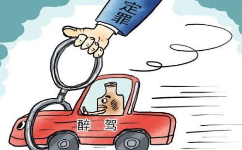

1、酒后驾驶，暂扣6个月驾驶证，并处1000元以上2000元以下罚款。此前曾因酒驾被处罚，再次酒后驾驶的，处10日以下拘留，并处1000元以上2000元以下罚款，吊销驾驶证。
2、醉酒驾驶，由公安机关约束至酒醒。吊销机驾驶证，依法追究刑事责任，5年内不得重新取得驾驶证。
3、酒后驾驶营运车辆，处15日拘留，并处5000元罚款，吊销驾驶证，5年内不得重新取得驾驶证。
4、醉酒驾驶营运车辆，由公安机关约束至酒醒。吊销机动车驾驶证，依法追究刑事责任，10年内不得重新取得驾驶证。重新取得驾驶证后，不得驾驶营运车辆。
5、酒后或醉酒驾驶，发生重大交通事故，构成犯罪的，依法追究刑事责任。吊销驾驶证，终生不得重新取得驾驶证。
醉驾最轻处罚就是处一个月拘役并收取一定罚金。车辆驾驶人员血液中的酒精含量大于或者等于80mg/100mL的驾驶行为成为醉驾。醉驾无事故会处以拘役，拘役的期限为一个月以上六个月以下，并处罚金。
醉驾不交罚款的，根据《道路交通安全法》第一百零九条：当事人逾期不履行行政处罚决定的，作出行政处罚决定的行政机关可以采取下列措施：(一)到期不缴纳罚款的，每日按罚款数额的百分之三加处罚款;(二)申请人民法院强制执行。
看属于哪个阶段，律师费用一般按阶段手续，且根据案件大小，费用没有明确的标准，律师收费均不一样。每个地区或不同律师的收费标准不同，建议参考当地律协或司法行政部门发布的律师收费标准，咨询不同的律师也可以进行收费和专业性比较。律师费大多以协商收费为准。目前醉驾一般在5000-30000之间，看涉案复杂程度：有无逃逸、拒不配合检查、财产损失、当事人悔罪表现;律师的专业能力等多种因素综合收费。
驾驶人血液中的酒精含量大于(等于)20毫克/100毫升、小于80毫克/100毫升的情况下驾驶机动车属于饮酒驾车，含量大于(等于)80毫克/100毫升的情况下驾驶机动车属于醉酒驾车。
饮酒驾车和醉酒驾车都属于严重的交通违法行为，都应受到法律法规的惩罚，而从危害程度来看，醉酒驾车的危害性要远比饮酒驾车的危害性更大。
酒驾处罚流程如下：
酒驾处罚第一步：抽血。等待验血报告，大约四到五天时间。（根据当天酒醉状态，在血液报告没出来前，需找关系的抓紧时间）
酒驾处罚第二步：通知拿验血报告（交300元验血费）。根血液酒精含量定性，小于80/mg的为酒驾，处罚结果：掉扣驾证六个月，罚金2000元。酒精含量大于80/mg的为醉驾，处罚结果：掉销驾证，五年禁考驾证，由交警移交检察法，提起公诉。
酒驾处罚第三步：交警队告知户籍派出所，办理取保后审（需交10000元保证金）。由派出所指定办理GPS手机号，并保持随打随接状态。此程序快点一天办完，慢点两天，根据个人情况，每天月26号到所里报到，并手写一份思想汇报。
酒驾处罚第四步：案件将会转交给检察院。等待检察院向法院提起公诉，约要一个半月到两个月的时间。
酒驾处罚第五步：检察院下达起诉书。
酒驾处罚第六步：等待法院开庭宣判，十天到半个月。
酒驾处罚第七步：法院下达传票，告知开庭时间和地点，由法院委托司法局做社会调查，同时到司法局报到。
酒驾处罚第八步：司法局受权当地司法所做调查，视情况而定，快点两天，慢就不好说了。
酒驾处罚第九步：由司法所向司法局提交调查报告，再由法司局向法院提交建议，法院根这些调查定刑。约要三到四天。
酒驾处罚第十步：法院下达判决书。
酒驾处罚第十一步：拿着判决书，找交警队办案民警，到派出所取消，取保后审，再凭保证金票居，到市局退还保证金。
酒驾处罚第十二步：服刑。整个事件带服完刑。
1、触觉能力降低
饮酒后驾车，因酒精麻醉作用，人的手、脚触觉较平时降低，往往无法正常控制油门、刹车及方向盘。
2、判断能力和操作能力降低
饮酒后，人对光、声刺激的反应时间延长，从而无法正确判断距离和速度。
3、视觉障碍
血液中酒精含量超过0.3％。就会导致视力降低，在这种情况下，人已经不具备驾驶能力。如果酒精含量超过0.8％，驾驶员的视野就会缩小。至于醉酒的驾驶员，甚至只能感觉到周围环境的很小一部分。
4、心理变态
酒精刺激下，人有时会过高估计自己，对周围人劝告常不予理睬，往往做出力不从心的事。
5、疲劳驾驶
饮酒后易困倦，表现为驾车行驶不规律、空间视觉差等疲劳驾驶行为。